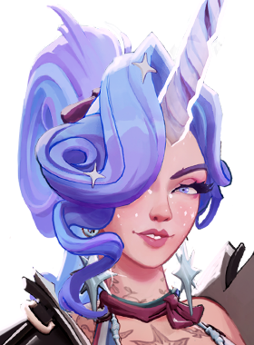

Mobilidade e dano rápido para eliminar alvos frágeis.
História
A Comissão de Segurança e Investigação Oculta é uma organização governamental de caixa preta que faz a CIA parecer transparente. Cabe aos homens, mulheres e entidades da OSIC manter o país protegido de forças sinistras que estão além das capacidades da aplicação da lei local.
Como membro da notória Divisão Sandman, Haze é rotineiramente encarregado de se infiltrar nos sonhos de pessoas de interesse, para avaliar o seu nível de ameaça e, se necessário... colocá-los para dormir.
História oficial do jogo, traduzida automaticamente para o português.
Números reais
Habilidades

Lança uma adaga que fere e faz o alvo dormir; alvos dormindo acordam pouco depois de sofrer dano.

Some de vista, ficando invisível e ganhando velocidade de corrida; atacar quebra a invisibilidade e inimigos muito próximos ainda a veem.

Cada tiro acertado num alvo acumula um bônus de dano de bala contra ele, com bônus maior em tiros na cabeça.

Entra numa rajada que atira em inimigos próximos com precisão perfeita e dano de bala adicional.
Builds mais usadas
9.478 partidas registradas com esta build.
Revista Estendida (800) · Atacante Rápido (1.600) · Saúde Extra (800) · Recarga Ativa (1.600) · Revista Titânico (1.600) · Roubo de vida de bala (1.600) · Triturador resistente a balas (1.600) · Explosão de fogo (3.200) · Fortaleza (3.200) · Fúria Transe (3.200)
8.594 partidas registradas com esta build.
Espírito Extra (800) · Rodadas rápidas (800) · Recarga Ativa (1.600) · Saúde Extra (800) · Atacante Rápido (1.600) · Pé Ligeiro (1.600) · Hex retardado (1.600) · Surto de Poder (3.200) · Fortaleza (3.200) · Velocidade duradoura (1.600)
6.724 partidas registradas com esta build.
Revista Estendida (800) · Rodadas rápidas (800) · Recarga Ativa (1.600) · Atacante Rápido (1.600) · Revista Titânico (1.600) · Roubo de vida de bala (1.600) · Pé Ligeiro (1.600) · Triturador resistente a balas (1.600) · Explosão de fogo (3.200) · Ricochete (6.400)
Confrontos reais
 Shiv — 60.5% de vitória
Shiv — 60.5% de vitória Viscous — 59.4% de vitória
Viscous — 59.4% de vitória Deadman Danny — 59.1% de vitória
Deadman Danny — 59.1% de vitória Solomon — 58.5% de vitória
Solomon — 58.5% de vitória Mirage — 58.5% de vitória
Mirage — 58.5% de vitória Sinclair — 58.5% de vitória
Sinclair — 58.5% de vitória
 Rat King — 47.4% de vitória
Rat King — 47.4% de vitória Graves — 47.6% de vitória
Graves — 47.6% de vitória Paige — 47.9% de vitória
Paige — 47.9% de vitória Seven — 49.7% de vitória
Seven — 49.7% de vitória Victor — 49.8% de vitória
Victor — 49.8% de vitória Dynamo — 51.1% de vitória
Dynamo — 51.1% de vitória
O que upar primeiro
Nível por nível, na ordem que os jogadores mais usam em partidas de verdade. A porcentagem mostra quantos escolheram aquela habilidade naquele nível.
Melhores duplas
Heróis que mais ganham jogando junto com ele, em partidas reais (pelo menos 1.500 partidas juntos).
- Paige61,4%
- Seven61,3%
- Rat King61,0%
- Graves60,7%
- Victor59,7%
- Deadman Danny46,6%
- Mirage48,2%
- Shiv48,6%
Rota (lane)
Na rota, cada lado joga em dupla. Estes números são de confrontos reais: a diferença de almas é medida com o jogo já começado, então almas no verde significa que ele costuma estar na frente.
- Rat King — 48,3% de vitória +273 almas (7.935 partidas)
- Paige — 48,8% de vitória +256 almas (2.779 partidas)
- Graves — 50,0% de vitória +703 almas (4.101 partidas)
- Seven — 51,7% de vitória +526 almas (3.664 partidas)
 Lash — 52,2% de vitória +366 almas (8.905 partidas)
Lash — 52,2% de vitória +366 almas (8.905 partidas) Holliday — 52,4% de vitória +97 almas (1.180 partidas)
Holliday — 52,4% de vitória +97 almas (1.180 partidas)- Victor — 52,7% de vitória +68 almas (3.304 partidas)
 Yamato — 53,1% de vitória +51 almas (1.888 partidas)
Yamato — 53,1% de vitória +51 almas (1.888 partidas)

Celeste — 64,4% de vitória +1.027 almas (323 partidas) Rem — 60,5% de vitória +383 almas (4.005 partidas)
Rem — 60,5% de vitória +383 almas (4.005 partidas) Silver — 60,2% de vitória −42 almas (591 partidas)
Silver — 60,2% de vitória −42 almas (591 partidas)
Histórico de win rate
07/09: 53.6% → 26/10: 52.9% → 14/12: 53.3% → 01/02: 52.9% → 22/03: 56.3% → 10/05: 53.0% → 28/06: 52.1% → 16/08: 50.5% → 04/10: 55.3%